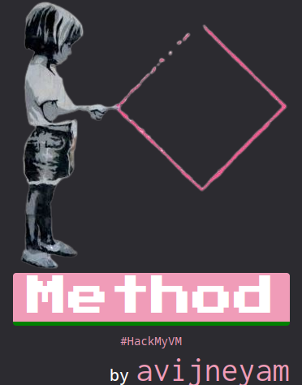
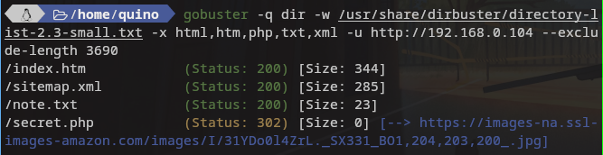
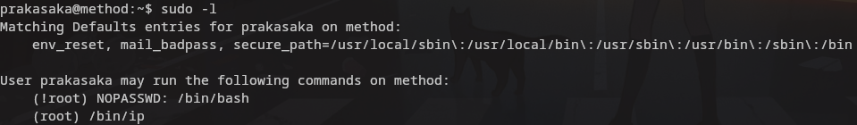
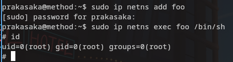

En esta maquina en teoría sencilla nos encontramos los siguientes retos y complicaciones

Lo primero como siempre averiguar la ip de la victima para ello ejecutamos
arp-scan --localnet
Una vez tenemos clara la ip lanzamos nmap .
nmap -T4 -sCSV -p- 192.168.0.104
Como podemos observar nos muestra el puerto 22 y el 80 abierto.
Es momento de investigar manualmente la pagina que corre en el servidor http , para ganar algo de tiempo mientras revisamos la web lanzamos dirb y gobuster que son dos programas para fuzzing.
gobuster -q dir -w /usr/share/dirbuster/directory-list-2.3-small.txt -x html,htm,php,txt,xml -u http://192.168.0.104 --exclude-length 3690
Lo primero que nos encontramos es el index por defecto del servidor nginx , no hay nada en el codigo de ese .html Observamos los resultados tanto de dirb como gobuster e investigamos los links que nos a proporcionado. Responden a las siguientes rutas.

El index htm nos lleva a una web con una imagen , observando el codigo fuente vemos que nos muestra la misma ruta que nos dio gobuster /secret.php.

El sitemap.xml nos indica una ruta que no existe.
El txt nos indica que el secreto de esta maquina esta en la enumeración.

Y por ultimo la ruta hacia secret.php nos redirecciona a una imagen externa (Un cahondo el tipo que creo el reto, nos dice que usemos el cerebro )
En el codigo de index.htm vemos que hay un form escondido debemos de inetentar llegar a el , construimos la url con los datos que aparecen en el form .
http://192.168.0.104/secret.php?HackMyVM

Como podemos observar es el sitio correcto pero la manera incorrecta pues nos dice que probemos otro método , lo único que se me ocurre es como se tramita la petición de esa web , las partes visibles son GET y las ocultas POST por resumirlo de esta manera burda y probablemente poco acertada.
Después de una par de horas investigando y buscando la forma de poder modificar la petición me instalo la extensión de firefox http request maker.

Se debe de poder hacer con curl , burpsuite e imagino que wget
El unico fichero que nos falta por revisar el codigo es secret.php asi que vamos ello .

Como vemos es un script que lo que hace es que cuando la solicitud no va por post nos redirecciona a otro lugar y cuando la realizas por post y y usas HackMyVM te prensenta la posibilidad de ejecutar comandos.

Yo pensaba en una revshell pero al final del todo encontramos un user y una pass , recordemos que el 22 esta abierto y sin mas vamos a probar.
Entramos con ese user y pass

Ahora como siempre lo primero sudo y luego find buscando permisos setiud.

Con sudo -l tenemos suerte nos vamos como siempre a gtfobins y buscamos “ip” seguimos los pasos del punto b que son los que a mi me han funcionado y nos olvidamos de find. En el momento que ejecutamos los dos comandos nos convertimos en root.

Estos ultimos comandos no se que hacian y decidi que me lo explicara la puta IA.
- sudo ip netns add foo: Este comando crea un nuevo espacio de nombres de red llamado “foo”. Los espacios de nombres de red proporcionan entornos de red aislados, lo que significa que los procesos que se ejecutan en un espacio de nombres de red no pueden ver ni comunicarse con los procesos que se ejecutan en otros espacios de nombres de red.
- sudo ip netfs exec foo /bin/sh :Este ejcuta bin sh dentro del espacio de red foo , lo cual hace que nos lancemos una shell de root.
Muchas gracias por leer. Acabe tan harto de leer sobre las peticiones que al final no me acorde de la flag de root .